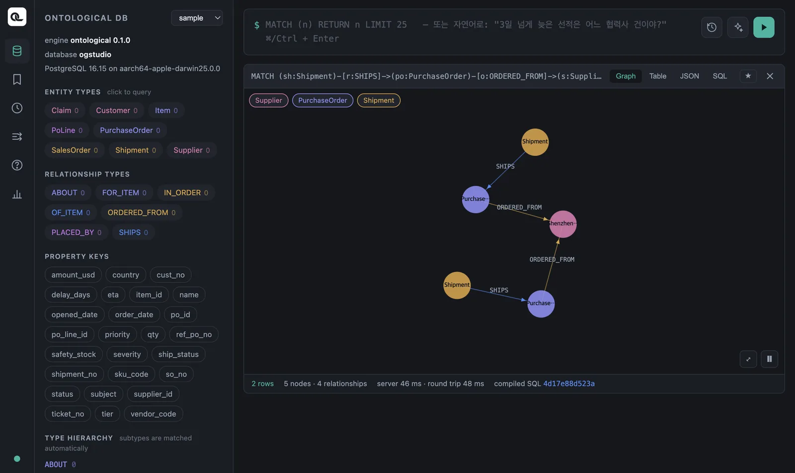

관계 패턴으로 노드 사이를 걸어가고, 여러 데이터베이스를 한 질의로 잇고, count·sum·collect로 묶어 셉니다. Cypher가 SQL보다 편해지는 지점입니다.
관계 패턴#
MATCH (po:PurchaseOrder)-[:ORDERED_FROM]->(s:Supplier)
RETURN po.po_id, po.status, s.name
| po.po_id | po.status | s.name |
|---|---|---|
| PO-001 | OPEN | Shenzhen Goldline PCB |
| PO-002 | OPEN | Shenzhen Goldline PCB |
| PO-003 | CLOSED | 한빛정밀 |
| PO-004 | CLOSED | 대성케이블 |
| PO-005 | OPEN | Ningbo Magnetics |
| PO-006 | OPEN | Hanoi Assembly |
| PO-007 | OPEN | Ningbo Magnetics |
| PO-008 | OPEN | 한빛정밀 |
발주는 ERP의 purchase_order, 협력사는 ERP의 supplier입니다. 관계 ORDERED_FROM이 purchase_order.supplier_id = supplier.supplier_id 조인을 대신했습니다.
방향#
| 패턴 | 뜻 |
|---|---|
(a)-[:R]->(b) |
a에서 b로 |
(a)<-[:R]-(b) |
b에서 a로 — 같은 관계를 반대편에서 읽기 |
(a)-[:R]-(b) |
방향 상관없이 |
관계는 정의된 방향이 있습니다(PurchaseOrder → Supplier). 협력사에서 출발하고 싶으면 화살표를 반대로 씁니다.
MATCH (s:Supplier)<-[:ORDERED_FROM]-(po:PurchaseOrder)
RETURN s.name, collect(po.po_id) AS orders
| s.name | orders |
|---|---|
| 대성케이블 | ["PO-004"] |
| Shenzhen Goldline PCB | ["PO-001", "PO-002"] |
| 한빛정밀 | ["PO-003", "PO-008"] |
| Ningbo Magnetics | ["PO-005", "PO-007"] |
| Hanoi Assembly | ["PO-006"] |
노드마다 라벨을 붙이세요
Ontological DB에서는 패턴의 노드마다 라벨을 적어야 빠르고 정확합니다. (s:Supplier)<-[:ORDERED_FROM]-(po)보다 (po:PurchaseOrder)처럼 쓰세요. 특히 데이터 패브릭의 가상 관계는 라벨 없이 -[r]->(관계 이름도 없이)로 찾으면 결과가 비어 나옵니다. 관계 이름과 양쪽 라벨을 모두 적는 습관을 들이세요.
여러 걸음 — 다른 데이터베이스를 건너서#
2장에서 본 질문입니다. 선적(WMS) → 발주(ERP) → 협력사(ERP).
MATCH (sh:Shipment)-[:SHIPS]->(po:PurchaseOrder)-[:ORDERED_FROM]->(s:Supplier)
WHERE sh.delay_days > 0
RETURN sh.shipment_no, sh.ship_status, sh.delay_days, po.po_id, s.name
ORDER BY sh.delay_days DESC
| sh.shipment_no | sh.ship_status | sh.delay_days | po.po_id | s.name |
|---|---|---|---|---|
| SHP-03 | CUSTOMS_HOLD | 9 | PO-002 | Shenzhen Goldline PCB |
| SHP-02 | IN_TRANSIT | 7 | PO-001 | Shenzhen Goldline PCB |
| SHP-06 | IN_TRANSIT | 3 | PO-005 | Ningbo Magnetics |
| SHP-05 | DELIVERED | 1 | PO-004 | 대성케이블 |
노드를 통째로 돌려주면 그래프로 볼 수 있습니다. 관계에도 변수(r, o)를 붙여 함께 돌려줍니다.
MATCH (sh:Shipment)-[r:SHIPS]->(po:PurchaseOrder)-[o:ORDERED_FROM]->(s:Supplier)
WHERE sh.delay_days > 3
RETURN sh, r, po, o, s

선적 두 건이 서로 다른 발주를 거쳐 같은 협력사 하나로 모이는 모양이 보입니다. 표로는 잘 안 보이던 사실입니다 — 늦은 선적의 원인이 한 협력사에 몰려 있습니다.
고객 쪽으로#
CRM 안에서 클레임 → 판매 주문 → 고객:
MATCH (c:Claim)-[:ABOUT]->(so:SalesOrder)-[:PLACED_BY]->(cu:Customer)
RETURN c.ticket_no, c.severity, c.subject, so.so_no, cu.name
| c.ticket_no | c.severity | c.subject | so.so_no | cu.name |
|---|---|---|---|---|
| T-1 | HIGH | 컨트롤러 전원 불량 | SO-01 | 서울전자 |
| T-2 | LOW | 케이블 포장 파손 | SO-04 | Berlin Motion |
| T-3 | HIGH | PCB 납땜 불량 | SO-05 | Tokyo Devices |
갈래가 둘인 패턴#
쉼표로 패턴을 여러 개 적으면, 같은 변수가 두 패턴을 묶습니다. “납땜 불량 클레임이 난 품목을 공급한 협력사는?” — CRM의 클레임에서 품목으로, 그 품목에서 ERP의 발주 품목과 협력사로. (6장에서 만든 PoLine이 필요합니다.)
MATCH (i:Item)<-[:FOR_ITEM]-(so:SalesOrder)<-[:ABOUT]-(c:Claim),
(i:Item)<-[:OF_ITEM]-(l:PoLine)-[:IN_ORDER]->(po:PurchaseOrder)-[:ORDERED_FROM]->(s:Supplier)
WHERE c.subject CONTAINS '납땜'
RETURN DISTINCT i.name, s.name
| i.name | s.name |
|---|---|
| PCB 기판 | Hanoi Assembly |
| PCB 기판 | Shenzhen Goldline PCB |
세 데이터베이스(CRM·ERP)와 다섯 종류의 노드를 지나는 질문이 한 문장이 됐습니다.
없는 짝도 남기기 — OPTIONAL MATCH#
SQL의 LEFT JOIN에 해당합니다. 짝이 없어도 행을 남기고, 없는 쪽은 null이 됩니다.
MATCH (sh:Shipment)
OPTIONAL MATCH (sh:Shipment)-[:SHIPS]->(po:PurchaseOrder)
RETURN sh.shipment_no, po.po_id
ORDER BY sh.shipment_no
8건 중 SHP-08만 po.po_id가 null입니다. 이 선적은 ERP에 없는 발주 PO-999를 가리키고 있습니다 — 일부러 넣어 둔 데이터 품질 문제입니다. 짝이 없는 것만 고르려면:
MATCH (sh:Shipment)
OPTIONAL MATCH (sh:Shipment)-[:SHIPS]->(po:PurchaseOrder)
WITH sh, po WHERE po IS NULL
RETURN sh.shipment_no, sh.ref_po_no
결과: SHP-08, PO-999.
NOT EXISTS 대신
Neo4j의 WHERE NOT EXISTS { MATCH … } 하위 질의는 아직 지원하지 않습니다. 위처럼 OPTIONAL MATCH + IS NULL로 씁니다.
묶어서 세기 — 집계#
RETURN에 집계 함수와 보통 값이 함께 있으면, 보통 값끼리 같은 행이 한 묶음이 됩니다(SQL의 GROUP BY를 따로 쓰지 않습니다).
MATCH (po:PurchaseOrder)
RETURN po.status, count(*) AS n, sum(po.amount_usd) AS total,
avg(po.amount_usd) AS average, max(po.amount_usd) AS biggest
| po.status | n | total | average | biggest |
|---|---|---|---|---|
| CLOSED | 2 | 24000 | 12000 | 15000 |
| OPEN | 6 | 255000 | 42500 | 82000 |
협력사별 미결 발주 금액:
MATCH (po:PurchaseOrder)-[:ORDERED_FROM]->(s:Supplier)
WHERE po.status = 'OPEN'
RETURN s.name AS supplier, count(po) AS open_orders, sum(po.amount_usd) AS open_amount
ORDER BY open_amount DESC
| supplier | open_orders | open_amount |
|---|---|---|
| Shenzhen Goldline PCB | 2 | 123000 |
| Ningbo Magnetics | 2 | 72000 |
| Hanoi Assembly | 1 | 33000 |
| 한빛정밀 | 1 | 27000 |
협력사별 가장 나쁜 지연:
MATCH (s:Supplier)<-[:ORDERED_FROM]-(po:PurchaseOrder)<-[:SHIPS]-(sh:Shipment)
RETURN s.name, max(sh.delay_days) AS worst
ORDER BY worst DESC
Shenzhen Goldline PCB 9일, Ningbo Magnetics 3일, 대성케이블 1일, 나머지 0일.
단계를 나누기 — WITH#
WITH는 질의를 두 단계로 나눕니다. 앞 단계의 결과를 다음 단계가 이어받습니다. 집계한 값으로 다시 거를 때(SQL의 HAVING) 씁니다.
MATCH (po:PurchaseOrder)-[:ORDERED_FROM]->(s:Supplier)
WITH s, count(po) AS n
WHERE n >= 2
RETURN s.name, n
발주가 두 건 이상인 협력사 — Ningbo Magnetics, Shenzhen Goldline PCB, 한빛정밀(각 2건).
collect()로 모은 목록의 길이는 size()로 잽니다.
MATCH (po:PurchaseOrder)-[:ORDERED_FROM]->(s:Supplier)
WITH s, collect(po.po_id) AS pos
RETURN s.name, size(pos) AS n, pos
ORDER BY n DESC
알려진 제약 — 금액 합계로 거르기
WITH s, sum(po.amount_usd) AS total WHERE total > 50000처럼 소수 타입 컬럼의 합계로 다시 거르면 지금 판에서는 invalid input syntax for type bigint 오류가 납니다. sum(toFloat(po.amount_usd))로 실수로 바꿔 더하면 됩니다.
cypher
MATCH (po:PurchaseOrder)-[:ORDERED_FROM]->(s:Supplier)
WITH s, sum(toFloat(po.amount_usd)) AS total
WHERE total > 50000
RETURN s.name, total ORDER BY total DESC
목록에서 시작하기 — UNWIND#
목록을 행으로 펼칩니다. 여러 키를 한 번에 조회할 때 편합니다.
UNWIND ['SHP-02', 'SHP-03'] AS no
MATCH (sh:Shipment {shipment_no: no})
RETURN sh.shipment_no, sh.eta
확인 문제
- 미결(
OPEN) 판매 주문을 고객별로 모아, 고객 이름과 주문 번호 목록을 보여 주세요. - 선적이 두 건 이상인 발주는 무엇인가요?
- 심각도
HIGH클레임을 낸 고객과 그 판매 주문을 찾으세요. - (도전) 협력사마다 미결 발주가 몇 건인지, 미결 발주가 없는 협력사도 0으로 나오게 쓰세요.
정답 보기
MATCH (cu:Customer)<-[:PLACED_BY]-(so:SalesOrder)
WHERE so.status = 'OPEN'
RETURN cu.name, collect(so.so_no) AS open_orders
Tokyo Devices ["SO-03", "SO-05"], 서울전자 ["SO-02"].
MATCH (po:PurchaseOrder)<-[:SHIPS]-(sh:Shipment)
WITH po, count(sh) AS shipments WHERE shipments >= 2
RETURN po.po_id, shipments
PO-001 (SHP-01, SHP-02).
MATCH (cu:Customer)<-[:PLACED_BY]-(so:SalesOrder)<-[:ABOUT]-(c:Claim)
WHERE c.severity = 'HIGH'
RETURN cu.name, so.so_no, c.subject
서울전자 SO-01 「컨트롤러 전원 불량」, Tokyo Devices SO-05 「PCB 납땜 불량」.
MATCH (s:Supplier)
OPTIONAL MATCH (s:Supplier)<-[:ORDERED_FROM]-(po:PurchaseOrder)
WHERE po.status = 'OPEN'
RETURN s.name, count(po) AS open_n ORDER BY open_n DESC
대성케이블이 0으로 나옵니다. count(po)는 null을 세지 않기 때문입니다(count(*)였다면 1이 됩니다).